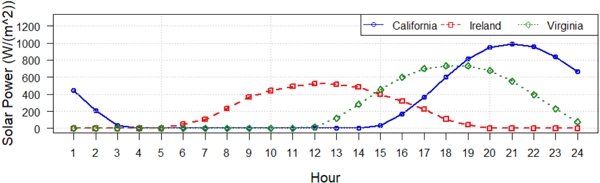

VoltK8sScheduler
Un ordonnanceur Kubernetes pour environnements contraints en énergie
Auteurs
Data Centers: Croissance Explosive
Hausse des data centers. Consommation électrique et impact environnemental en forte croissance.
Consommation: Chiffres Clés
IA propulse la demande. Calcul = 40% conso. Fournisseurs cloud veulent réduire coûts & empreinte.
Défi: Énergies Renouvelables
Objectif neutralité carbone. Solaire/éolien dominants, mais intermittents. (Concept Fig.1)
Intermittence Solaire & Coûts
Solaire variable. Heures creuses/pleines influencent coûts. Parfois prix négatifs.
Notre Solution: Double Approche
1: Limitation dynamique puissance. 2: Conteneurs + Ordonnancement K8s éco-conscient.
K8s & Énergie: Le Manque
Scheduler K8s: optimise CPU/RAM. Ignore l'énergie. Nécessaire en environnement contraint.
Notre Innovation: VoltK8sScheduler
Nous proposons VoltK8sScheduler: intègre l'énergie dans le placement des conteneurs.
Plan de la Présentation
- Introduction & Contexte
- État de l'Art
- Approche Proposée: VoltK8sScheduler
- Analyse Expérimentale
- Conclusion & Travaux Futurs
État de l'Art: Power Capping
Techniques pour limiter la consommation max des serveurs.
Objectifs: efficacité, éviter urgences, réduire coûts OPEX.
État de l'Art: Power Capping
Mécanismes: DVFS, RAPL (Intel), Intel Node Manager, Power Gating, Thread Packing...
Beaucoup ne sont pas adaptés à notre cas :
- N'intègrent pas la puissance de la source.
- Non conçus pour Kubernetes.
État de l'Art: Schedulers K8s Éco-Conscients
Plusieurs travaux visent à optimiser l'énergie dans K8s.
État de l'Art: Schedulers K8s Éco-Conscients
Exemples : Kaur et al. (interférences), Vishal et al. (edge), Philipp et al. (prédiction via GNN), Tayebeh et al. (Caspian, carbone), John & Javad (RLKube).
Ces solutions sont intéressantes, mais...
État de l'Art: Leurs Limites / Notre Niche
Souvent, l'énergie n'est pas le critère principal de décision.
Focus sur optimisation ressources ou allocation, pas directement sur contrainte énergétique forte.
Notre besoin: Placer charges en fonction de l'énergie disponible et limitée.
Approche Proposée: Architecture
Vue d'ensemble de notre solution VoltK8sScheduler.

(Default Scheduler, KCAS Scheduler, API Server, Metrics, Powercap...)
Composants Clés
Powercap Agent
Limite la puissance des nœuds (via RAPL).
Monitoring (Kepler)
Collecte conso. énergie (nœuds, pods).
VoltK8sScheduler
Plugin K8s, prend décisions de placement.
Zoom: Power Capping avec RAPL
RAPL: Running Average Power Limit (Intel).
Mesure et limite conso. de domaines du processeur.

(PKG, PPO, PP1, DRAM, PSys)
RAPL: Fenêtres Temporelles
PL1 (Long-Term): Régule conso. moyenne pour éviter surchauffe (TDP).
PL2 (Short-Term): Permet pics de conso. brefs pour charges intenses.
Peak Power: Limite absolue instantanée.
Algorithme Power Capping (1/2)
Algorithm 1: Power Capping Algorithm
Input: current_domain, Pmin, sleep_time, get_source_power
1 Function Init(domains):
2 Pmax_ref = 0; // Référence TDP
3 foreach domain_path in domains do
4 domain_max_power = readMaxPower(domain_path);
5 Pmax_ref = max(Pmax_ref, domain_max_power);
6 return Pmax_ref; // Pmax de l'article
Initialisation: trouve Pmax de référence (TDP).
Algorithme Power Capping (2/2)
// Pmax_ref est le Pmax de l'article (TDP)
8 while True do
9 Ps = get_source_power(); // Puissance source actuelle
10 Power_to_apply = Pmin;
11 if Ps > Pmax_ref then // Si source > TDP max du noeud
12 Power_to_apply = Pmax_ref;
13 else
14 if Ps > Pmin then // Si source entre Pmin et Pmax_ref
15 Power_to_apply = Ps;
16 foreach domain_path in current_domain do // Applique aux domaines
17 current_domain[domain_path] = Power_to_apply;
18 sleep(sleep_time);
Boucle: ajuste limite conso. nœud selon puissance source (Ps) et Pmin/Pmax.
Zoom: Le Scheduler Kubernetes
Rappel: Architecture K8s (Maître-Nœuds).

Framework de Scheduling K8s
Expose points d'extension (phases) pour plugins.

Nous utilisons: PreFilter, Filter, Score, NormalizeScore, Reserve.
VoltK8sScheduler: Logique
Notre scheduler sélectionne le meilleur nœud via ces phases.
Objectif : placer pods sur nœuds avec assez d'énergie disponible.
Phase 1: PreFilter (Algo 2)
Prépare infos. Calcule podPower (user ou historique via f_pod).
Collecte Pmax (limite capping) et Pac (conso actuelle nœud via f_ac).
Output: powerLimits [nodeName -> (Pmax, Pac, podPower)]
Phase 2: Filter (Algo 3)
Élimine nœuds non viables.
Un nœud est viable si :
availablePower (Pmax - Pac - allocatedPower) >= podPower
Phase 3: Score (Algo 4)
Attribue un score aux nœuds filtrés.
Score basé sur surplus d'énergie après placement pod :
Score = Pmax - Pac - podPower - allocatedPower
Phases 4 & 5
NormalizeScore: Normalise scores (0-MaxNodeScore) pour équité avec autres plugins.
Reserve: Réserve temporairement podPower sur nœud choisi. Compense délai collecte métriques.
VoltK8sScheduler: Démo
Scheduler
Pmax: 100W
Pac: 30W
Dispo: 70W
Pmax: 120W
Pac: 40W
Dispo: 80W
File d'attente :
nodePowerAllocations: {"A":0, "B":0}. MaxNodeScore: 100.
Pod1: PreFilter
Analyse Pod1
20W
70W
80W
Pod1: puissance user 20W. Pas d'historique. podPower = 20W.
Pod1: Filter
NodeA (70W) et NodeB (80W) sont viables pour Pod1 (20W).
Pod1: Score
Score!
Score A: 100-30-20-0 = 50. Score B: 120-40-20-0 = 60.
Pod1: NormalizeScore & Assignation
Décision!
NodeB (100) > NodeA (~83). Pod1 assigné à NodeB.
Pod1: Reserve
Dispo: 70W
Dispo: 60W
File:
NodeB réserve 20W. alloc: {"A":0, "B":20}.
Pod2: PreFilter
Analyse Pod2
15W(u)
30W(h)
70W
60W
Pod2: user 15W, hist. max 30W. podPower = 30W.
Pod2: Filter
NodeA (70W) et NodeB (60W) sont viables pour Pod2 (30W).
Pod2: Score
Score!
Score A: 100-30-30-0 = 40. Score B: 120-40-30-20 = 30.
Pod2: NormalizeScore & Assignation
Décision!
NodeA (100) > NodeB (75). Pod2 assigné à NodeA.
Pod2: Reserve & État Final
Dispo: 40W
Dispo: 60W
NodeA réserve 30W. alloc: {"A":30, "B":20}.
Détails d'Implémentation
Monitoring: Prometheus + Kepler (kepler_node_platform_joules_total, kepler_container_joules_total).
Powercap Tool: En Go. Utilise API K8s pour màj descriptions nœuds (labels rapl/max_power_uw, rapl/pmax).
Scheduler: Plugins PreFilter, Filter, etc. implémentés avec le framework K8s.
Analyse Expérimentale: Configuration
Tests sur Grid5000 (Tableau 1: Taurus, Econome, Fleckenstein, Paradoxe - versions RAPL v1/v2).
Cluster local: 3 mini-PCs (Intel Core i7-10710U, 12 cœurs, Pmax 15W, RAPL v2).
Résultats Power Capping (Grid5000)
Comportement du capping selon version RAPL.
")
")
RAPL v1: Chute rapide conso. (60-70% powercap). v2: Baisse linéaire.
Distribution Pods: Nœuds Identiques
Scénario 1: 2 nœuds workers identiques (Pmax, Pac).
Application web (Redis+PHP). HPA ajoute 2 réplicas/fois.

VoltK8sScheduler équilibre bien la charge.
Distribution Pods: Nœuds Différenciés
Scénario 2: Node1 Pmax = 90% de Node2 Pmax.
Objectif: observer adaptation du scheduler.
Cas 1: Web App (peu gourmande)

Plus de pods sur Node2 pour compenser Pmax plus faible de Node1. (e.g. 14 pods)
Cas 2: Stress-ng (gourmand)

Moins de pods sur Node2 (e.g. 2) suffisent pour équilibrer, car chaque pod consomme plus.
Synthèse Expérimentale
Power capping efficace pour respecter limites de conso.
VoltK8sScheduler favorise nœuds avec plus d'énergie résiduelle.
Décisions cohérentes avec les algorithmes sous-jacents.
Conclusion
Présenté VoltK8sScheduler: ordonnanceur K8s tenant compte énergie.
Agent de power capping (RAPL) + scheduler interagissant avec Prometheus/Kepler.
Combinaison permet de respecter budget énergie et déployer apps efficacement.
Limitations
- S'applique aux plateformes Intel avec RAPL.
- Non déployable sur VMs (majorité clusters K8s prod).
- Impact du power capping sur perfs applicatives à évaluer plus finement.
Travaux Futurs
- Étendre à AMD et autres architectures.
- Intégration avec VMs.
- Explorer autres mécanismes de power capping.
- Prise en compte de l'origine (verte/mix) de l'énergie.
Questions ?
Merci pour votre attention !
Code: github.com/menraromial/{powercap, scheduler-plugins}